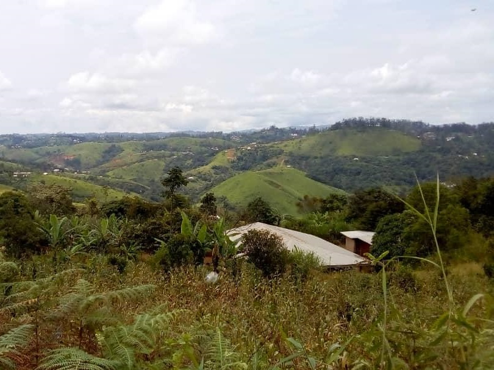
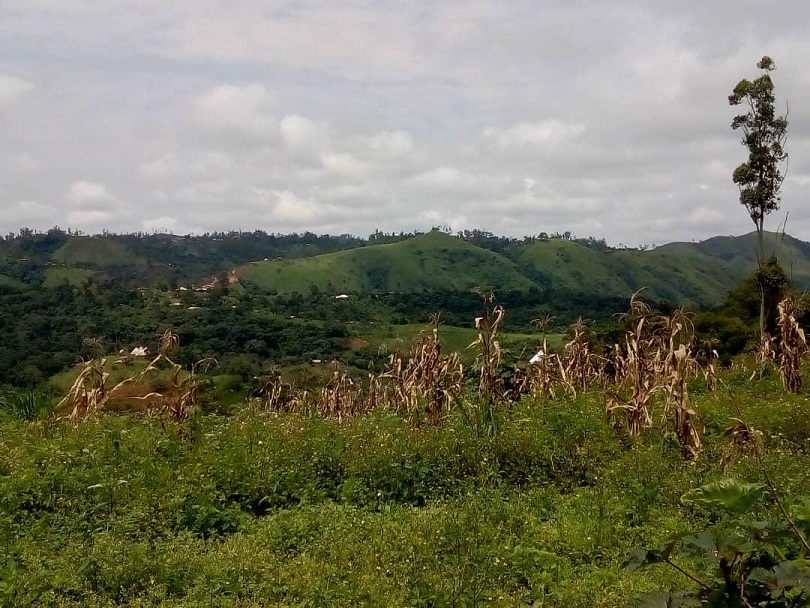
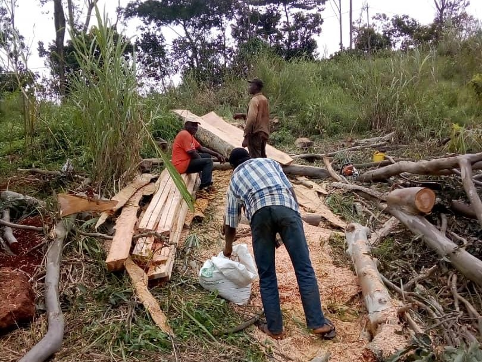
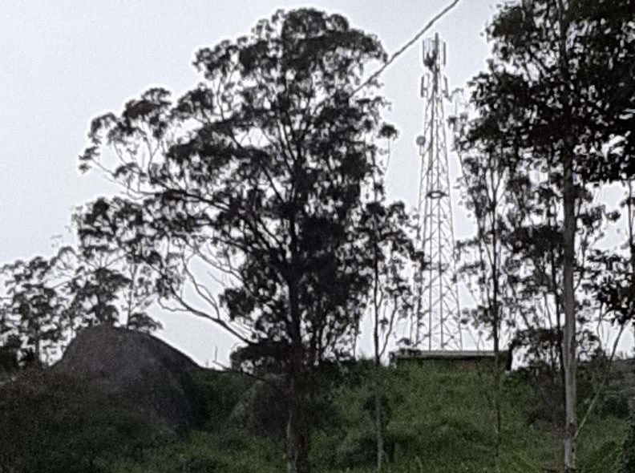
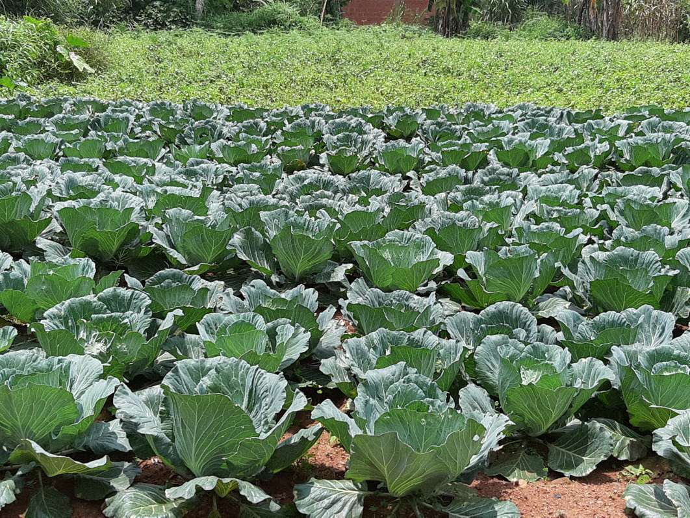
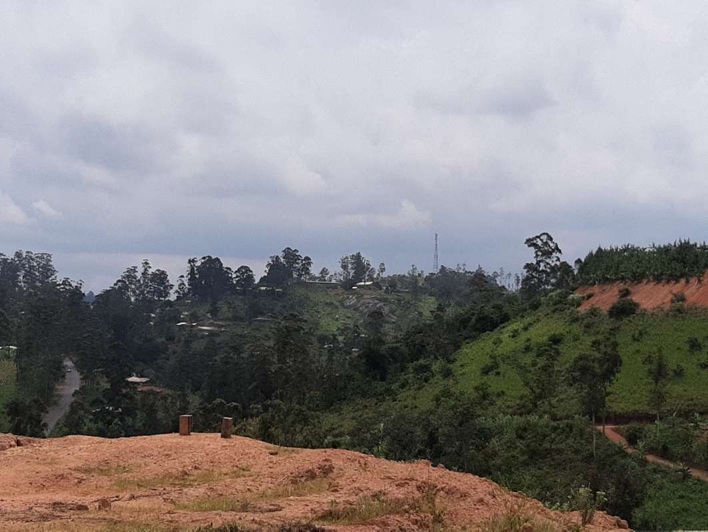

Depicted By a Traveller Photographer
No one knows the world like G Adventurers—and in this post, we share our picks for 4 of the Batie’s most beautiful landscapes, along with helpful information for travellers who want to see them for themselves. Join us on a journey to the planet's most breathtaking places and celebrate the world's most magnificent landscapes.
Compiled with shots from G Adventures photographers, this post spans the globe to highlight the Batie's most famous and lesser known places.
The first from our gallery is the picture of the 'Meeting Point'. This modest looking bench certainly witnessed a lot of interesting stories and the whole area around it is very peaceful and inspiring.

Driving Through The Countryside
In this expanse of green there are more hues than anyone has ever named, yet here they are for any eye to see. The land rolls as it always has, as if it feels that time and space are one thing, that it rolls through the ages as much as to the horizon. Over it is laid a path, one that branches through the open landscape, and as I begin to walk there is a frisson of joy for all the choices to come, each one of them laden with discoveries.



The countryside lay before us like a divine fingerprint, curving and changing, no two parts the same. In all the world this view was unique, such is the way of the organic world. The dip and sway of the land, the patterns and species of flora, the every changing sky and wind. Every step was a new snapshot in time, for even this one place, this view from one fine oak tree on a hill, could never be exactly the same two days in a row. Little by little the seasons would bring changes. River's mind wandered back to the far away city, his home, it had its rhythms too: the start and ending of school years, the vacations of summer and the winter festivals. Yet the countryside had a way of reminding him that he wasn't apart from nature, but a part of nature. Often on these travels he'd reach out to touch the bark of the trees as he passed or feel the softness of new leaves...



To the unaccustomed eye the dale was a beautiful swathe of rolling green divided by walls of mossy grey stone, picturesque by any standards. But to a modern man it was just grass, grass and more grass. He had never noticed the wide variety of deciduous trees in the woodland, or how their many different sized leaves adopted different hues in the autumn. Even these were just mud, sticks and leaf litter under boot. He detested having to bus for forty minutes to watch a movie, he loathed the trip to the supermarket taking twice as long as the actual shopping and the thought of spending more of his youth in a place where the number one sport was "pooh sticks" with your kid cousins drove him insane. He had a plan for getting to the civilization of the city. Unfortunately it meant studying at school, but a ticket to the university meant a farewell to the countryside.

Louis Tonta ( Photographer )
I really enjoyed driving through the amazing landscapes of Batie while writing this article.
Comments
Ernesto Tagho
3 days agoGreat photos, interesting article.